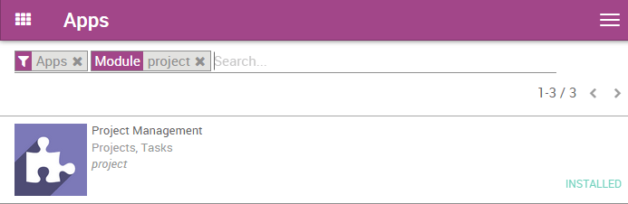
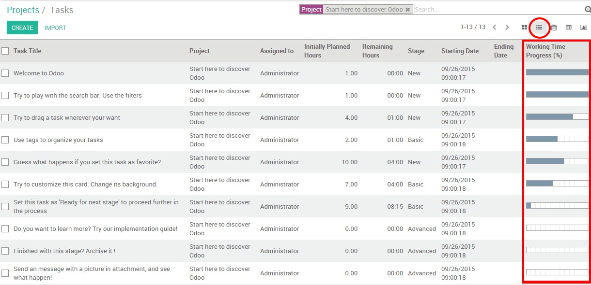

Following and planning your employees' assignments can be a heavy challenge especially when you manage several people. Luckily, using YuanCloud Project, you can handle it in only a couple of clicks.
配置
The only necessary configuration is to install the Project Management module. To do so, go in the application module, search for project and install the application.
If you wish to manage time estimation, you will need to enable timesheets on tasks. From the Project application, go to in the dropdown menu. Then, under Time Work Estimation, select the manage time estimation on tasks option. Do not forget to apply your changes.

This feature will create a progress bar in the form view of your tasks. Every time your salesperson will add working time in his timesheet, the bar will be updated accordingly, based on the initially planned hours.

管理带有视图的任务
You can have an overview of your different task thanks to the multiple views available with YuanCloud. Three main views will help you to plan and follow up on your employees' tasks: the kanban view, the list view (using timesheets) and the calendar view.
来创建并编辑任务在管道中输入内容。记着填写负责人和预计日期。
对带有看板视图的活动进行查看
看板视图看起来像是一个被分成不同阶段的便贴视图。这能让你清楚的看到你的任务所在的阶段以及较高优先级的任务。
The Kanban view is the default view when accessing a project, but if you are on another view, you can go back to it any time by clicking the kanban view logo in the upper right corner

添加或者重新排列阶段
You can easily personalize your project to suit your business needs by creating new columns. From the Kanban view of your project, you can add stages by clicking on Add new column (see image below). If you want to rearrange the order of your stages, you can easily do so by dragging and dropping the column you want to move to the desired location. You can also fold or unfold your stages by using the setting icon on your desired stage.

小技巧
根据过程的阶段分别创建栏。例如在开发项目中，阶段可能是：说明定义，开发，测试，完成。
根据优先级排列任务
在每列中，你可以根据任务的优先级进行排序。高优先级的任务会自动的被移动到列的上方。在看板视图中，点击任务卡右下方的星标记该任务为 高优先级 。对于没有标记的任务，YuanCloud会自动的根据他们的最后期限进行划分。
注意超过了最后期限的日期会显示红色(列表视图中也是)，所以你能很轻松的追踪每个任务的进展。

小技巧
记着你还能在过滤按钮上过滤任务。
用列表视图追踪每个任务的过程
If you enabled the Manage Time Estimation on Tasks, your employees will be able to log their activities on tasks under the Timesheets sub-menu along with their duration. The Working Time Progress bar will be updated each time the employee will add an activity.

作为经理，在列表视图下你可以查看所有员工花费在任务上的时间。要这样做，进入所选的项目中并点击列表视图图标(见下图)。最后一列可以看到每个任务的进展。
在日历视图中要留意最后期限
如果在你的任务中添加最后期限，他就回显示在日历视图中。作为一个经理，这样的视图能够让你在一个窗口中查看所有的最后期限。

所有的任务都根据任务的所有者的不同而标记不同的颜色。你可以在日期视图的右边勾选相关的勾选框轻易的根据员工过滤最后期限。
小技巧
在日历视图中，通过退拽你可以轻易的变更最后期限。